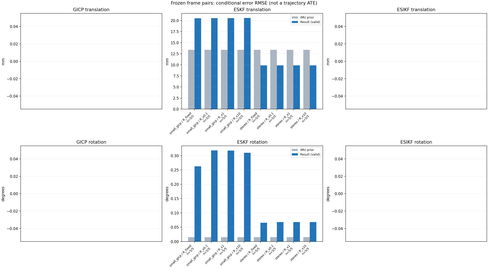

20261015_112757_right · depth=disparity_cache · cache=88990c54f9f0bcfdf807
模型视差：/home/ubuntu22/slam/SIO_SLAM/models/tensorrt/disp_896x448_fp16.plan；engine SHA256=604cf6ac1f705c877260711730dd5d2d58c2a21f3020c03c668401ef7fb1e768。输入为生产裁剪与光照处理后的 RGB 0..255；此实验使用原始浮点像素视差，不应用完整前端的邻域视差后处理。
原始 ONNX SHA256：e9f49736a65d68d06681add463866b6defdf78fdd7f4f50f6cc941b682fdc0bc。
代价体图改写验证：ONNX Runtime 固定随机特征输入，最大绝对误差 0；该项检查图改写，完整模型精度仍需由录制数据评估。
配准代码版本：744ac2d993ae629b0cc44a3b1d995e04ab4fad48；观测生成版本：744ac2d993ae629b0cc44a3b1d995e04ab4fad48。
固定图像对与纯 IMU 先验；ESKF 回放固定 GICP 观测，ESIKF 直接读取点云。真值只用于此报告。
同时查看 converged 与 solver_status：上游默认 Stereo 在 max_iter / stopped_at_minimum 时也可能置 converged=true。valid 表示输入检查通过，不表示精度提升。欧氏 GICP 未提供独立的点距 RMSE，该列显示 NaN。
误差按每对图像的锚点计算，单位 m / degrees。此处 RMSE 不是全序列 ATE；末帧受同一锚点条件约束。NIS 与条件马氏距离是诊断量，少量相关图像对不能用于宣称协方差已校准。
全部指标 CSV · R / P / K 矩阵 CSV · Stereo 求解逐轮 CSV · ESIKF 逐轮 CSV · 配置快照 · 矢量图
| stage | method | variant | valid | total | translation RMSE (m) | rotation RMSE (deg) |
|---|---|---|---|---|---|---|
| eskf | small_gicp | R_fixed | 5 | 5 | 0.020513 | 0.26279 |
| eskf | small_gicp | R_x0.1 | 5 | 5 | 0.020551 | 0.31816 |
| eskf | small_gicp | R_x1 | 5 | 5 | 0.020552 | 0.31731 |
| eskf | small_gicp | R_x10 | 5 | 5 | 0.020566 | 0.30964 |
| eskf | stereo | R_fixed | 5 | 5 | 0.0098658 | 0.065539 |
| eskf | stereo | R_x0.1 | 5 | 5 | 0.0098679 | 0.068054 |
| eskf | stereo | R_x1 | 5 | 5 | 0.0098679 | 0.068054 |
| eskf | stereo | R_x10 | 5 | 5 | 0.0098679 | 0.068053 |

| stage | case | method | variant | status | solver_status | inliers | converged | covariance_convention | covariance_from_hessian | fitness | registration_rmse_m | prior_trans_error_m | result_trans_error_m | prior_rot_error_deg | result_rot_error_deg | R_rot_trace_rad2 | R_pos_trace_m2 | nis_regularized |
|---|---|---|---|---|---|---|---|---|---|---|---|---|---|---|---|---|---|---|
| eskf | static_start | small_gicp | R_x0.1 | updated | 17102 | 1 | right_source_body | 1 | 0.949 | nan | 8.5313e-05 | 0.013027 | 0.00090396 | 0.38148 | 1.5183e-07 | 2.0154e-06 | 0.044091 | |
| eskf | static_start | small_gicp | R_x1 | updated | 17102 | 1 | right_source_body | 1 | 0.949 | nan | 8.5313e-05 | 0.013014 | 0.00090396 | 0.38127 | 1.5183e-06 | 2.0154e-05 | 0.044053 | |
| eskf | static_start | small_gicp | R_x10 | updated | 17102 | 1 | right_source_body | 1 | 0.949 | nan | 8.5313e-05 | 0.012886 | 0.00090396 | 0.37918 | 1.5183e-05 | 0.00020154 | 0.043678 | |
| eskf | static_start | small_gicp | R_fixed | updated | 17102 | 1 | right_source_body | 1 | 0.949 | nan | 8.5313e-05 | 0.012546 | 0.00090396 | 0.3647 | 0.00022846 | 0.0012 | 0.041658 | |
| eskf | static_start | stereo | R_x0.1 | updated | max_iter | 15435 | 1 | left_target_body | 1 | 0.85579 | 0.084219 | 8.5313e-05 | 0.0011455 | 0.00090396 | 0.0047596 | 5.6222e-10 | 8.443e-09 | 0.00010376 |
| eskf | static_start | stereo | R_x1 | updated | max_iter | 15435 | 1 | left_target_body | 1 | 0.85579 | 0.084219 | 8.5313e-05 | 0.0011455 | 0.00090396 | 0.0047595 | 5.6222e-09 | 8.443e-08 | 0.00010376 |
| eskf | static_start | stereo | R_x10 | updated | max_iter | 15435 | 1 | left_target_body | 1 | 0.85579 | 0.084219 | 8.5313e-05 | 0.0011455 | 0.00090396 | 0.0047593 | 5.6222e-08 | 8.443e-07 | 0.00010376 |
| eskf | static_start | stereo | R_fixed | updated | max_iter | 15435 | 1 | left_target_body | 1 | 0.85579 | 0.084219 | 8.5313e-05 | 0.0011109 | 0.00090396 | 0.0046803 | 0.00022846 | 0.0012 | 9.7176e-05 |
| eskf | sync_motion | small_gicp | R_x0.1 | updated | 17049 | 1 | right_source_body | 1 | 0.91874 | nan | 0.00089766 | 0.025453 | 0.0098191 | 0.45389 | 1.6123e-07 | 2.2564e-06 | 0.89509 | |
| eskf | sync_motion | small_gicp | R_x1 | updated | 17049 | 1 | right_source_body | 1 | 0.91874 | nan | 0.00089766 | 0.025464 | 0.0098191 | 0.45129 | 1.6123e-06 | 2.2564e-05 | 0.88974 | |
| eskf | sync_motion | small_gicp | R_x10 | updated | 17049 | 1 | right_source_body | 1 | 0.91874 | nan | 0.00089766 | 0.025582 | 0.0098191 | 0.42747 | 1.6123e-05 | 0.00022564 | 0.83955 | |
| eskf | sync_motion | small_gicp | R_fixed | updated | 17049 | 1 | right_source_body | 1 | 0.91874 | nan | 0.00089766 | 0.025546 | 0.0098191 | 0.28559 | 0.00022846 | 0.0012 | 0.35144 | |
| eskf | sync_motion | stereo | R_x0.1 | updated | max_iter | 15794 | 1 | left_target_body | 1 | 0.85898 | 0.11925 | 0.00089766 | 0.0028855 | 0.0098191 | 0.038474 | 5.5359e-10 | 8.3981e-09 | 0.00034019 |
| eskf | sync_motion | stereo | R_x1 | updated | max_iter | 15794 | 1 | left_target_body | 1 | 0.85898 | 0.11925 | 0.00089766 | 0.0028855 | 0.0098191 | 0.038473 | 5.5359e-09 | 8.3981e-08 | 0.00034018 |
| eskf | sync_motion | stereo | R_x10 | updated | max_iter | 15794 | 1 | left_target_body | 1 | 0.85898 | 0.11925 | 0.00089766 | 0.0028855 | 0.0098191 | 0.038471 | 5.5359e-08 | 8.3981e-07 | 0.00034009 |
| eskf | sync_motion | stereo | R_fixed | updated | max_iter | 15794 | 1 | left_target_body | 1 | 0.85898 | 0.11925 | 0.00089766 | 0.0028841 | 0.0098191 | 0.037931 | 0.00022846 | 0.0012 | 0.0001593 |
| eskf | main_motion | small_gicp | R_x0.1 | updated | 20071 | 1 | right_source_body | 1 | 0.87277 | nan | 0.0040306 | 0.013892 | 0.019163 | 0.31327 | 1.1365e-07 | 2.1206e-06 | 0.056848 | |
| eskf | main_motion | small_gicp | R_x1 | updated | 20071 | 1 | right_source_body | 1 | 0.87277 | nan | 0.0040306 | 0.013892 | 0.019163 | 0.31305 | 1.1365e-06 | 2.1206e-05 | 0.056807 | |
| eskf | main_motion | small_gicp | R_x10 | updated | 20071 | 1 | right_source_body | 1 | 0.87277 | nan | 0.0040306 | 0.013891 | 0.019163 | 0.31084 | 1.1365e-05 | 0.00021206 | 0.056399 | |
| eskf | main_motion | small_gicp | R_fixed | updated | 20071 | 1 | right_source_body | 1 | 0.87277 | nan | 0.0040306 | 0.013894 | 0.019163 | 0.28048 | 0.00022846 | 0.0012 | 0.045654 | |
| eskf | main_motion | stereo | R_x0.1 | updated | max_iter | 18902 | 1 | left_target_body | 1 | 0.8238 | 0.20503 | 0.0040306 | 0.0042657 | 0.019163 | 0.017814 | 2.9005e-10 | 6.2381e-09 | 9.1273e-06 |
| eskf | main_motion | stereo | R_x1 | updated | max_iter | 18902 | 1 | left_target_body | 1 | 0.8238 | 0.20503 | 0.0040306 | 0.0042657 | 0.019163 | 0.017814 | 2.9005e-09 | 6.2381e-08 | 9.1273e-06 |
| eskf | main_motion | stereo | R_x10 | updated | max_iter | 18902 | 1 | left_target_body | 1 | 0.8238 | 0.20503 | 0.0040306 | 0.0042657 | 0.019163 | 0.017814 | 2.9005e-08 | 6.2381e-07 | 9.1272e-06 |
| eskf | main_motion | stereo | R_fixed | updated | max_iter | 18902 | 1 | left_target_body | 1 | 0.8238 | 0.20503 | 0.0040306 | 0.0042658 | 0.019163 | 0.017516 | 0.00022846 | 0.0012 | 8.549e-06 |
| eskf | main_motion_long | small_gicp | R_x0.1 | updated | 17502 | 1 | right_source_body | 1 | 0.79281 | nan | 0.02491 | 0.026213 | 0.02698 | 0.10259 | 1.3806e-07 | 2.4392e-06 | 0.015169 | |
| eskf | main_motion_long | small_gicp | R_x1 | updated | 17502 | 1 | right_source_body | 1 | 0.79281 | nan | 0.02491 | 0.026213 | 0.02698 | 0.10252 | 1.3806e-06 | 2.4392e-05 | 0.015157 | |
| eskf | main_motion_long | small_gicp | R_x10 | updated | 17502 | 1 | right_source_body | 1 | 0.79281 | nan | 0.02491 | 0.026217 | 0.02698 | 0.10178 | 1.3806e-05 | 0.00024392 | 0.015041 | |
| eskf | main_motion_long | small_gicp | R_fixed | updated | 17502 | 1 | right_source_body | 1 | 0.79281 | nan | 0.02491 | 0.026207 | 0.02698 | 0.07955 | 0.00022846 | 0.0012 | 0.012319 | |
| eskf | main_motion_long | stereo | R_x0.1 | updated | max_iter | 15347 | 1 | left_target_body | 1 | 0.6955 | 0.099197 | 0.02491 | 0.019937 | 0.02698 | 0.083864 | 6.0592e-10 | 9.8807e-09 | 0.0059522 |
| eskf | main_motion_long | stereo | R_x1 | updated | max_iter | 15347 | 1 | left_target_body | 1 | 0.6955 | 0.099197 | 0.02491 | 0.019937 | 0.02698 | 0.083863 | 6.0592e-09 | 9.8807e-08 | 0.0059522 |
| eskf | main_motion_long | stereo | R_x10 | updated | max_iter | 15347 | 1 | left_target_body | 1 | 0.6955 | 0.099197 | 0.02491 | 0.019937 | 0.02698 | 0.083859 | 6.0592e-08 | 9.8807e-07 | 0.0059519 |
| eskf | main_motion_long | stereo | R_fixed | updated | max_iter | 15347 | 1 | left_target_body | 1 | 0.6955 | 0.099197 | 0.02491 | 0.019934 | 0.02698 | 0.074987 | 0.00022846 | 0.0012 | 0.0048188 |
| eskf | static_end | small_gicp | R_x0.1 | updated | 21818 | 1 | right_source_body | 1 | 0.98359 | nan | 0.0161 | 0.020349 | 0.0045092 | 0.21425 | 6.9113e-08 | 1.3139e-06 | 0.00045429 | |
| eskf | static_end | small_gicp | R_x1 | updated | 21818 | 1 | right_source_body | 1 | 0.98359 | nan | 0.0161 | 0.020349 | 0.0045092 | 0.21425 | 6.9113e-07 | 1.3139e-05 | 0.00045428 | |
| eskf | static_end | small_gicp | R_x10 | updated | 21818 | 1 | right_source_body | 1 | 0.98359 | nan | 0.0161 | 0.020348 | 0.0045092 | 0.21422 | 6.9113e-06 | 0.00013139 | 0.00045422 | |
| eskf | static_end | small_gicp | R_fixed | updated | 21818 | 1 | right_source_body | 1 | 0.98359 | nan | 0.0161 | 0.020348 | 0.0045092 | 0.21381 | 0.00022846 | 0.0012 | 0.00045326 | |
| eskf | static_end | stereo | R_x0.1 | updated | max_iter | 19865 | 1 | left_target_body | 1 | 0.89037 | 0.059223 | 0.0161 | 0.0078451 | 0.0045092 | 0.1196 | 4.4031e-10 | 7.2769e-09 | 0.00045071 |
| eskf | static_end | stereo | R_x1 | updated | max_iter | 19865 | 1 | left_target_body | 1 | 0.89037 | 0.059223 | 0.0161 | 0.0078451 | 0.0045092 | 0.1196 | 4.4031e-09 | 7.2769e-08 | 0.00045071 |
| eskf | static_end | stereo | R_x10 | updated | max_iter | 19865 | 1 | left_target_body | 1 | 0.89037 | 0.059223 | 0.0161 | 0.0078451 | 0.0045092 | 0.1196 | 4.4031e-08 | 7.2769e-07 | 0.00045071 |
| eskf | static_end | stereo | R_fixed | updated | max_iter | 19865 | 1 | left_target_body | 1 | 0.89037 | 0.059223 | 0.0161 | 0.007845 | 0.0045092 | 0.11869 | 0.00022846 | 0.0012 | 0.00043673 |